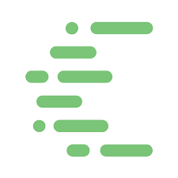
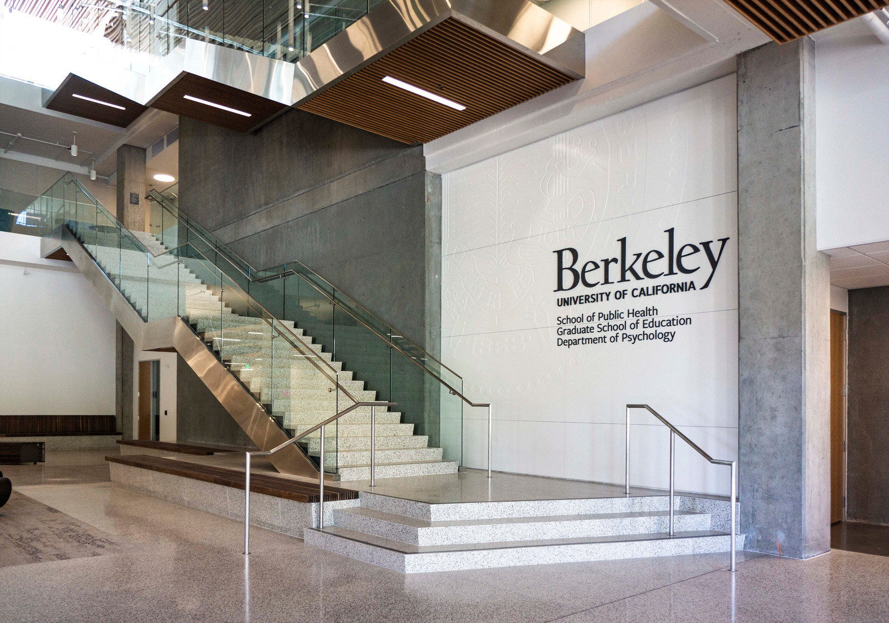

Hi, I'm Alicia!
I'm a rising sophomore at UC Berkeley studying electrical engineering & computer science. I'm interested in using tech (both hardware and software) to make education more accessible to students inside and outside classrooms.
I've spent the last year dabbling in web development, doodling, and petting every cat I see.
Education
University of California, Berkeley
Bachelor of Science, Electrical Engineering & Computer Science (EECS)
GPA: 3.94
Expected graduation: May 2023
Bachelor of Science, Electrical Engineering & Computer Science (EECS)
GPA: 3.94
Expected graduation: May 2023
TECHNICAL COURSEWORK
- Data Structures (Java)
- Designing Information Devices & Systems II/II
- Multivariable Calculus
- Discrete Mathematics & Probability
- Linear Algebra & Differential Equations
- Physics for Scientists & Engineers
 JUST FOR FUN
JUST FOR FUN
(ELECTIVE COURSEWORK)
- ComLitR1B: Ghost Stories
- ESPM163AC: Environmental Justice (Race, Equity, and the Environment)
- UGBA10: Principles of Business
Experience
Software Engineer Intern
Summer 2020
I built out an internal platform for Cisco's CloudOps Dev team that displays cost rollup data for 1500+ accounts via AWS Athena queries.
Summer 2020
I built out an internal platform for Cisco's CloudOps Dev team that displays cost rollup data for 1500+ accounts via AWS Athena queries.

I'm a tutor for EECS16A: Designing Information Devices & Systems I. I lead discussion sessions and facilitate extra practice for this introductory class in linear algebra and circuits. I loved this class when I took it, and it feels wonderful to give back.

I'm a project leader for Berkeley Codeology, leading a team of 5 in an iOS app development project and creating general meeting curriculums.

I worked in the Berkeley EDRL (Graduate School of Education) analyzing relationships between spatial reasoning and geometric concepts in children. To conclude the semester, I gave a 30-minute presentation on my findings to EDRL professors and PhD students.
Personal Website
I developed this website as an eight-week project for Codeology during the spring of 2020. It's a bit of a fixer upper, but it was rewarding to get to dabble in design during quarantine.
Skills
Advanced: Python, Java, HTML, CSS, Angular, SQL, MongoDB, Flask-Restful, Flask-SQLAlchemy, Adobe Suite, Microsoft Office Suite
In progress: JavaScript, React
Contact
If you want to chat, see my source code, or read all of this information again somewhere else: